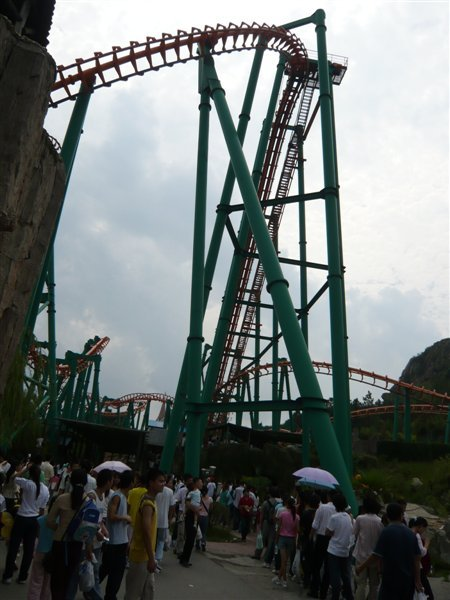

江苏五子棋联赛第二场8月15日-8月17日苏州举行
#1 江苏五子棋联赛第二场8月15日-8月17日苏州举行 作者：小丸.net 发表时间：2008-8-5 14:30:38
7月19-20号,江苏五子棋联赛第一场在江阴展开,在苏锡对抗中,南京的王烨林三战积3分领跑,傅亮与郑勇积2.5分紧追期后.
经过讨论决定于8月15-17号在苏州举行江苏联赛第二场.行程如下:
8月15号下午18:00 报到 晚餐后进行第一轮比赛
8月16号上午8:00-10:30 第二轮
下午12:00-14:30 第三轮
下午15:00-17:30 第四轮
晚上游玩苏州工业园夜景
8月17日 上午8:00-10:30第五轮 结束后游玩于苏州乐园(玩过山车)

图为苏州乐园过山车(看了就脚软)
比赛条件:安静茶室
住宿条件:双人标准间 80/间/晚
费用:50元/人
交通:火车站坐1、38、103观前街西下，游4察院场（观前街西）下
汽车北站南坐5路，察院场（观前街西）下
下交车后步行到观前街宫巷的春雷茶馆即到．
联系人：傅亮 13771983658
苏州概况:
苏州建城于公元前514年，吴王夫差的父亲阖闾命楚国叛将伍子胥建阖闾城，距今已有2500多年的历史。
春秋时期，这里是吴国的都城，至今还保留着许多有关西施、伍子胥等的古迹。隋开皇九年（公元589年）始称苏州，沿用至今。
苏州城建城早，规模大，水陆并行，河街相邻，古城区至今仍坐落在原址上，为国内外所罕见。
苏州园林甲天下，已被列入世界文化遗产名录，在中国四大名园中，苏州就占有拙政园、留园两席。
图为苏州第一名胜虎丘塔
“吴中第一名胜”虎丘有着深厚文化积淀；而唐朝诗人张继的一首《枫桥夜泊》，令古今游客争相来访枫桥，闻听寒山寺的钟声。
姑苏城外自然风光秀丽，灵岩、天平、天池和洞庭诸山，点缀于太湖之滨，形成了富有江南风情的湖光山色。
上有天堂,下有苏杭,苏州确实是一个避暑,游玩的圣地.不要错过哦.
#2 Re:江苏五子棋联赛第二场8月15日-8月17日苏州举行 作者：南京小飞机 发表时间：2008-8-5 16:06:09
苏州见
#3 Re:江苏五子棋联赛第二场8月15日-8月17日苏州举行 作者：yidefei 发表时间：2008-8-5 20:05:33
速度也还蛮快呀，不出意外的话到时候见。我想应该不仅仅限于上次参加第一场联赛的人，也欢迎各地五子棋爱好者或有兴趣参与联赛的人参与。#4 Re:江苏五子棋联赛第二场8月15日-8月17日苏州举行 作者：雅匪 发表时间：2008-8-5 21:07:14
苏州，
打这俩个字都感觉是美好的
#5 Re:江苏五子棋联赛第二场8月15日-8月17日苏州举行 作者：南京小飞机 发表时间：2008-8-13 23:11:58
临时有事 已和主办人说了 抱歉